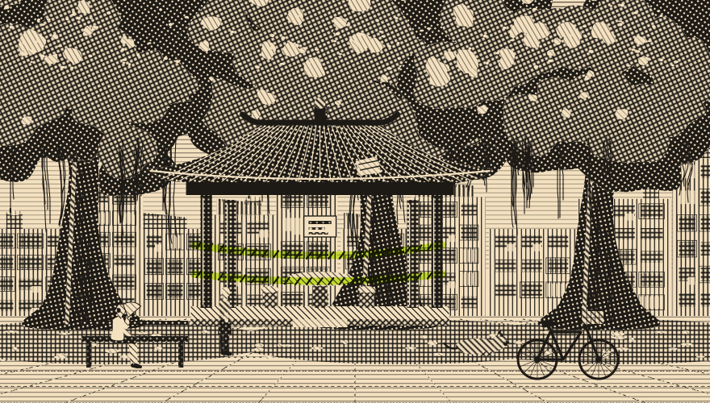

里民大會九十一票對十六票
榕樹下的涼亭不拆了
改為原地修繕：屋瓦重鋪、白蟻蛀空的樑柱換新；經費由里辦公處、福德祠與里民樂捐分攤，預定春節前完工

九月二十日晚上七點半，三榕里活動中心擠進一百零七位里民，連走廊都站滿了人。這場里民大會只討論一件事：三棵老榕樹下那座涼亭，要拆，還是要修？
涼亭是民國六十八年由當時的里長發起、里民出錢出力蓋的，四十七年來是全里的客廳：早上有人打太極，中午有人睡午覺，晚上是下棋和講古的地方。今年七月颱風過後，屋頂掉了三片瓦，一根樑柱被白蟻蛀空，里辦公處先拉起封鎖線，區公所評估後建議「拆除，改建為鋼構休憩設施」。
消息一出，里長信箱一週收到四十一封信。住在二鄰、退休三十年的木工師傅黃金水說：「樑換一根就好，拆掉太可惜了，那是我爸爸那一輩一根一根扛來的。
」也有人擔心安全：「修了以後，會不會再壞？」
「一根一根扛來的。」
黃金水，退休木工師傅
大會上，黃師傅帶來自己畫的修繕圖，逐一說明哪幾根樑要換、瓦片怎麼補、白蟻怎麼防。舉手表決時，九十一票贊成原地修繕、十六票贊成改建，涼亭留了下來。